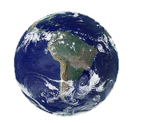
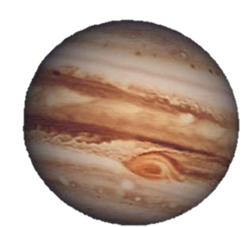
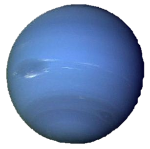

| Planet | Name | Diameter | Distance from the Sun | Number of Moons | Rotation | Orbit | |
|---|---|---|---|---|---|---|---|
 |
Mercury | 3,100 miles | 36 million miles | 0 | 59 days | 88 days | |
 |
Venus | 7,500 miles | 67 million miles | 0 | 243 days | 225 days | |
|  | Earth | 7,926 miles | 93 million miles | 1 | 24 hours | 365 days | |
 |
Mars | 4,218 miles | 142 million miles | 2 | 24.4 hours | 397 days | |
|  | Jupiter | 89,400 miles | 483 million miles | 16 | 10 hours | 11.6 years | |
 |
Saturn | 75,000 miles | 886 million miles | 20 | 10.4 hours | 29.46 years | |
 |
Uranus | 32,300 miles | 1.8 billion miles | 15 | 17 hours | 84 years | |
|  | Neptune | 32,300 miles | 2.8 billion miles | 3 | 18-22 hours | 165 years | |
| Sun | 870,000 miles | Designed by: Rafael Felipe G. Viterbo 10A | |||||